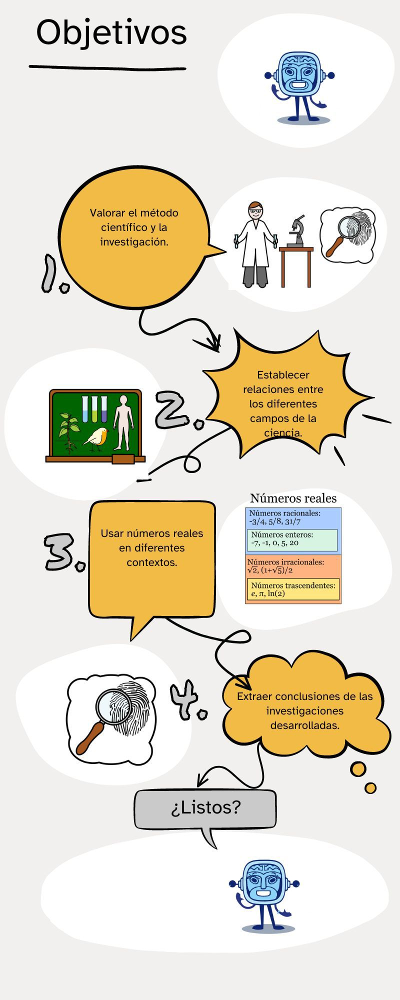

1. Objetivos
Al finalizar esta situación de aprendizaje serás capaz de:
-
Utilizar el lenguaje algebraico para interpretar diferentes situaciones susceptibles de ser representadas mediante polinomios.
-
Efectuar con soltura sumas, multiplicaciones, igualdades notables y divisiones de polinomios.
-
Conocer y aplicar el teorema del resto.
-
Conocer y aplicar correctamente la regla de Ruffini.
-
Obtener la descomposición factorial de un polinomio a partir de sus raíces.
-
Usar aplicaciones de cálculo simbólico.
-
Resolver problemas contextualizados en los que intervengan polinomios.
Audio
Apoyo visual
